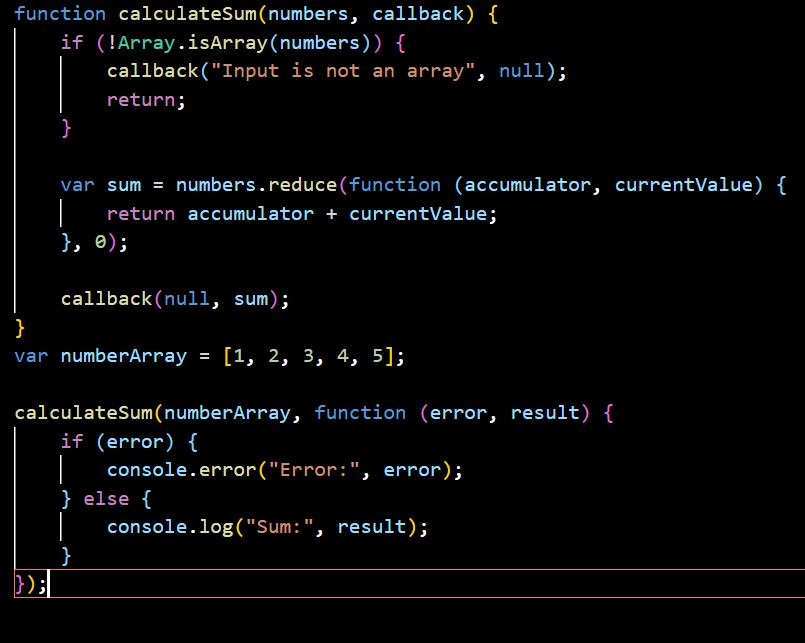
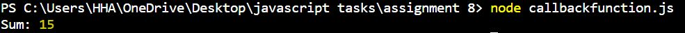

CALLBACK FUNCTION
In JavaScript, functions are objects. Can we pass objects to functions as parameters? Yes.
So, we can also pass functions as parameters to other functions and call them inside the outer functions.
Why do we need Callback Functions?
JavaScript runs code sequentially in top-down order. However, there are some cases that code runs (or must run) after something else happens and also not sequentially. This is called asynchronous programming.
Callbacks make sure that a function is not going to run before a task is completed but will run right after the task has completed. It helps us develop asynchronous JavaScript code and keeps us safe from problems and errors.
In JavaScript, the way to create a callback function is to pass it as a parameter to another function, and then to call it back right after something has happened or some task is completed.
Here's an example of a callback function in JavaScript:

Output:

In this code:
- The calculateSum function takes two parameters: numbers, an array of numbers, and callback, a callback function that will be called with the result.
- Inside the calculateSum function, it first checks if the numbers input is an array. If it's not, it calls the callback with an error message and a null result.
- If numbers is an array, it uses the reduce method to calculate the sum of the numbers in the array.
- Finally, it calls the callback function with the calculated sum as the result. If there is an error (e.g., the input is not an array), it passes the error message to the callback.
In the usage example, we call the calculateSum function with an array of numbers and provide a callback function to handle the result. The callback function logs the sum or any errors to the console.